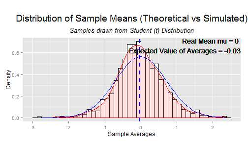
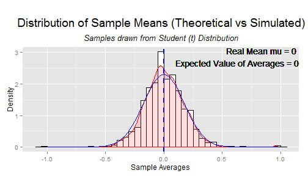

Central Limit Theorem Application
For Common Distribution
Woldetsadick Selam
Data Scientist
The Central Limit Theorem
Central Limit Theorem states that regardless of the shape of the underlying population of the continuous variable X having a mean μx and a standard deviation θx, the sampling distribution of the mean formed by taking all possible samples of a given size n will more and more closely approximate a normal distribution with mean μx̄ = μx and a standard error of the mean θx̄ = θx ⁄ √n as the sample size n increases.
This is the most powerful tool at the disposition of statisticians.

Illustration

The two figures (up and below) are generated using ggplot2. The plot on this page is generated by simulating n samples from the Student distribution of degrre of freedom 3. And each time the simulation is iterated 1000 times. Then sample averages for each of the 1000 simulations are calculated and a density plot of the distribution of this averages is rendered in red. The expected value of these avearges and the theoritical mean of the distribution from which the samples are simulated are printed on the graph. Additional a dashed blue line shows the center mass of the red density. In red line one can see the density of the CLT corresponding Normal density. In the plot in this page n is set equal to 6.
m <- m + geom_vline(aes(xintercept = round(mean(data.frame(b)$b), digits = 2)), color = "blue", linetype = "dashed", size = 1)
print(m)
